Bol
Pâtes & saumon
Tomates cerises, oignons verts.
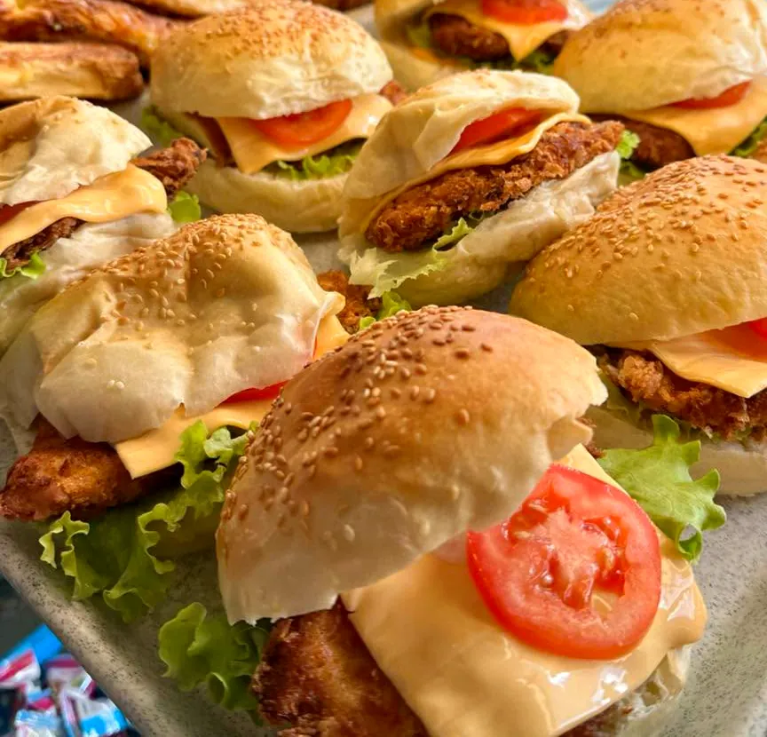
« Aux plaisirs de vous retrouver et régaler vos papilles. 🔥 » Le menu du jour, les bols à emporter, les burgers et les buffets traiteur, au cœur de Saint-Denis.
4 rue Pasteur, 97400 Saint-Denis
« Bonjour à tous et bienvenue sur ma page ☺️ »
Snackpasteur, c'est le snack du 4 rue Pasteur à Saint-Denis, tenu par Olivier, traiteur. Sur sa page, plus de 1 500 personnes suivent ses plats : des sautés bien laqués, des rougails qui mijotent, des bols généreux et des burgers dorés.
Recommandé à 100 % par les clients qui ont laissé un avis sur sa page Facebook.
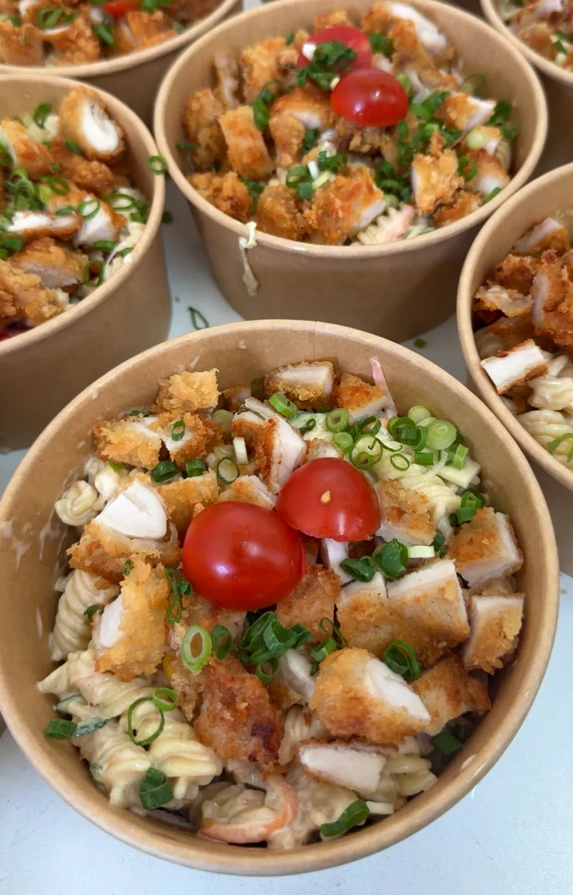
Chaque jour de semaine, Olivier publie « Le menu du jour » sur sa page Facebook, en photos. Un coup d'œil et vous savez déjà ce qui vous attend à midi.
Et ici, l’ardoise du site se met à jour en un instant, en même temps que Facebook.
Le menu du jour
Exemple d'ardoise d'après les photos publiées · le vrai menu est sur Facebook
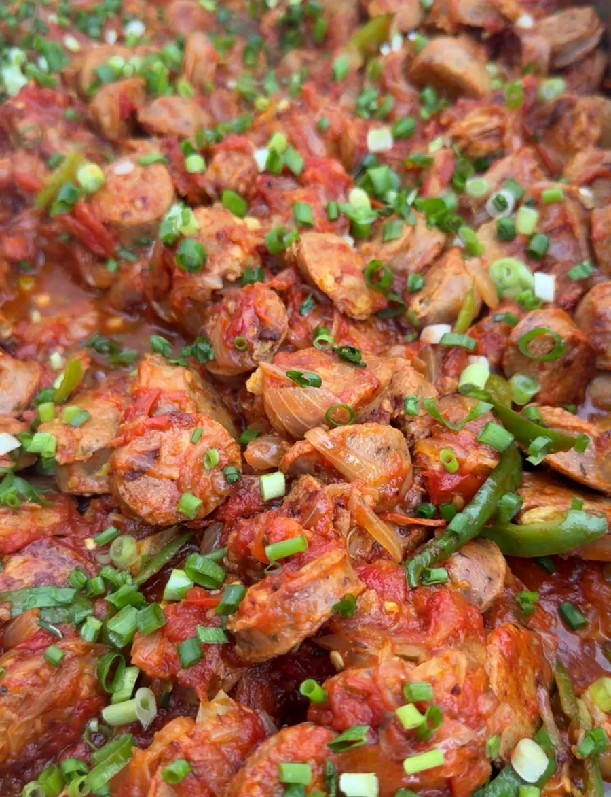
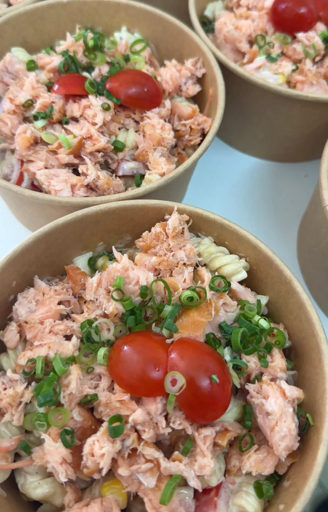
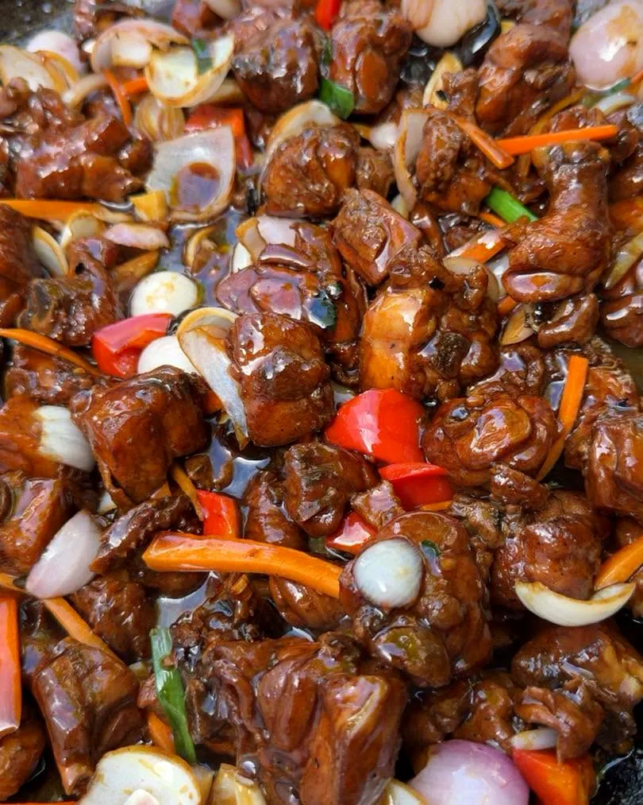
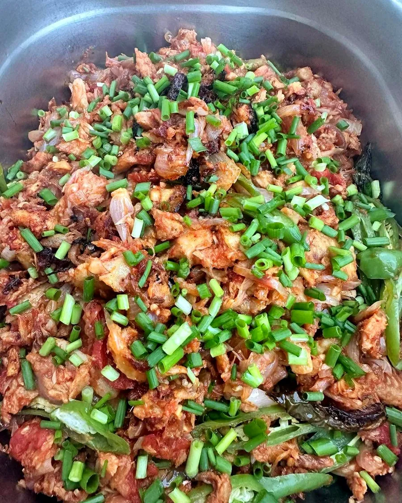
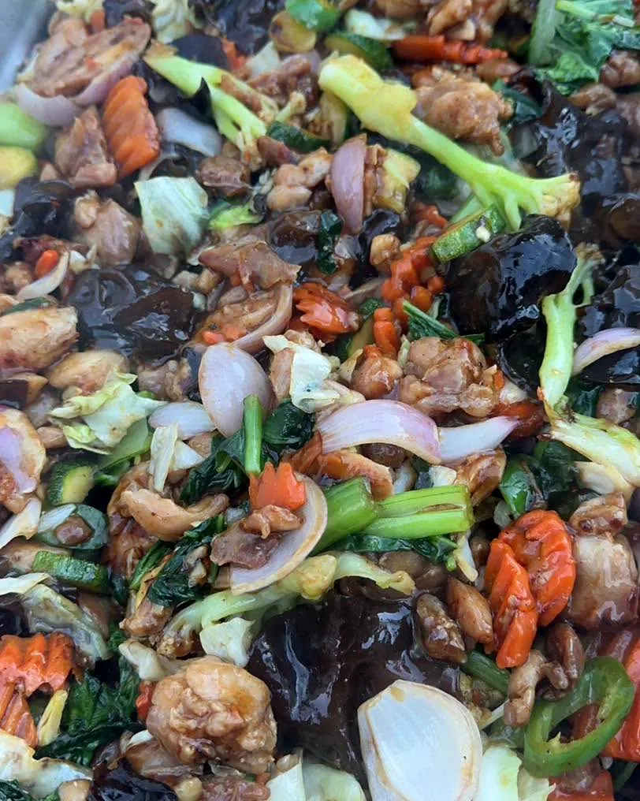
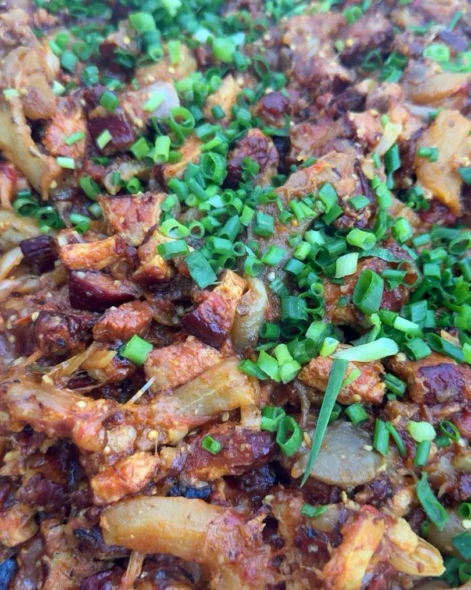
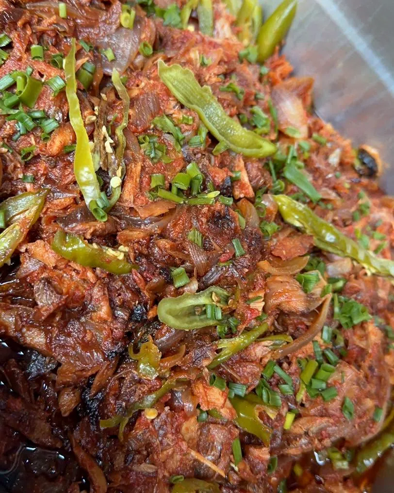
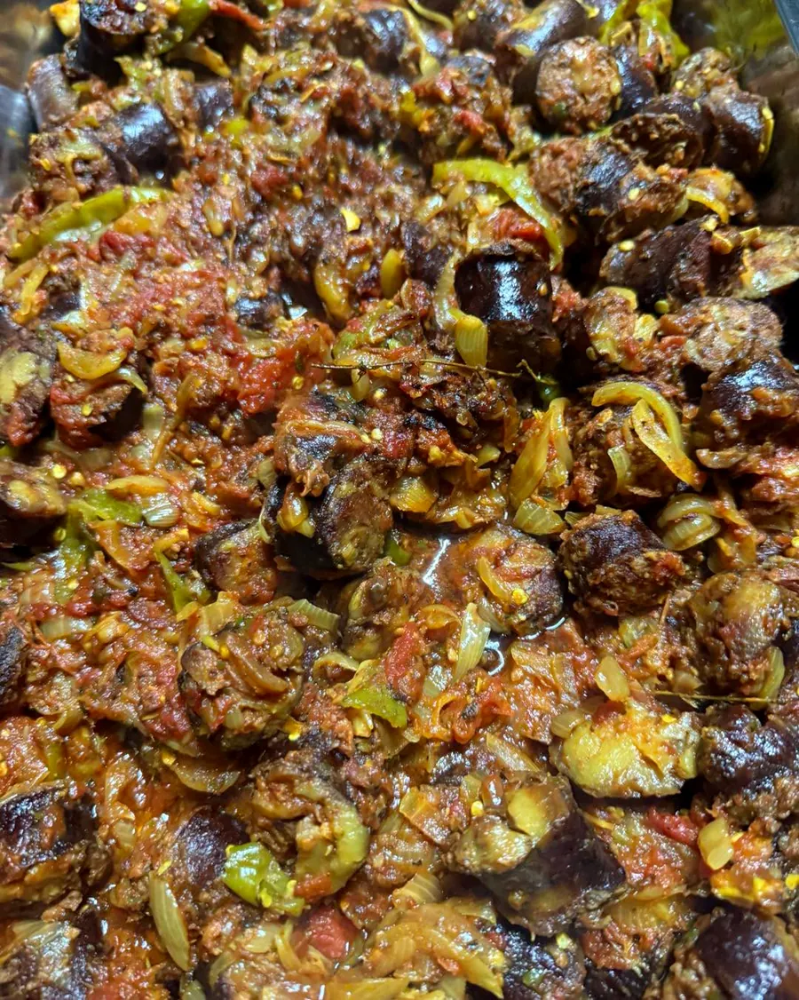
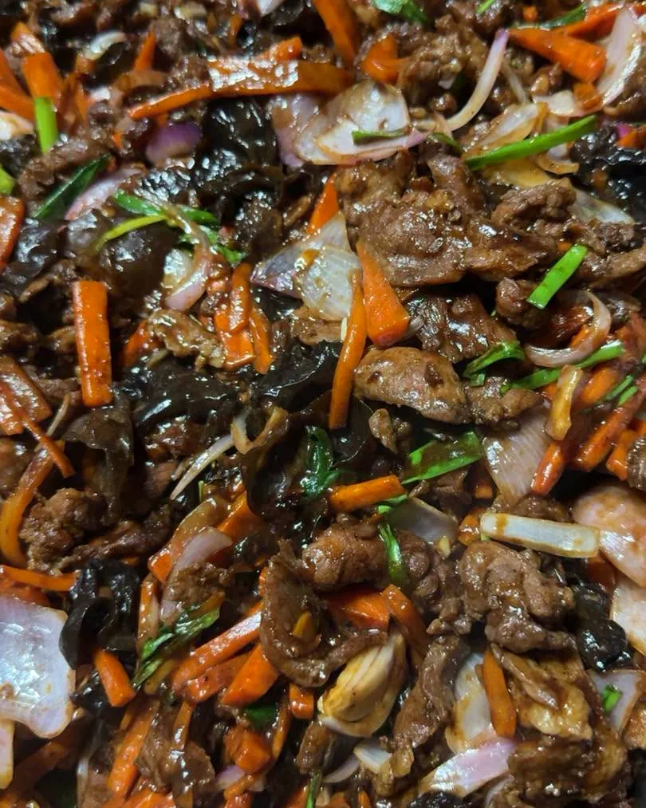
Faites glisser → photos publiées par Snackpasteur sur Facebook
Bols kraft bien remplis, salades avec leur sauce à part : de quoi déjeuner au bureau ou au grand air.
Tomates cerises, oignons verts.
Sur un lit de pâtes crémeuses.
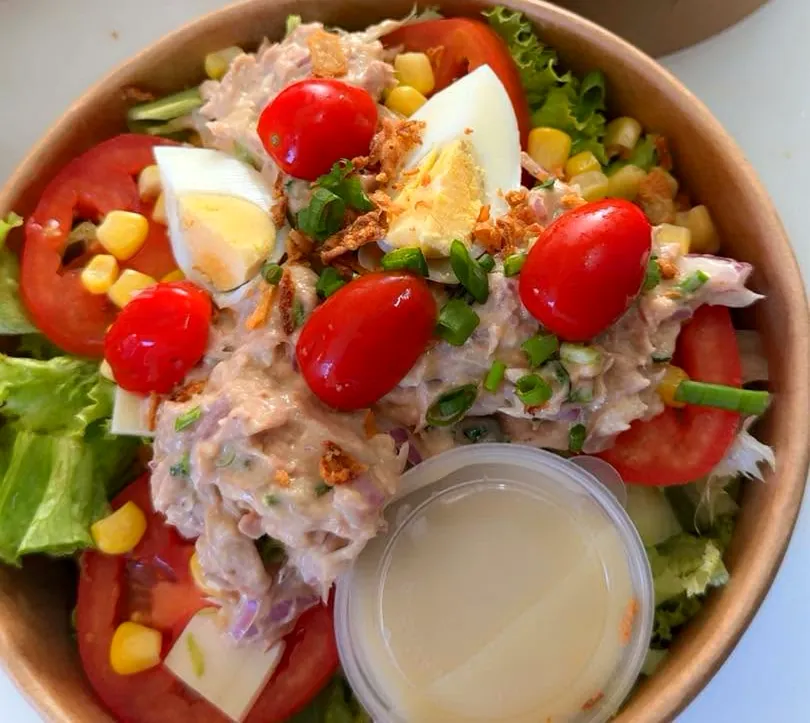
Œuf, maïs, tomates, sauce à part.
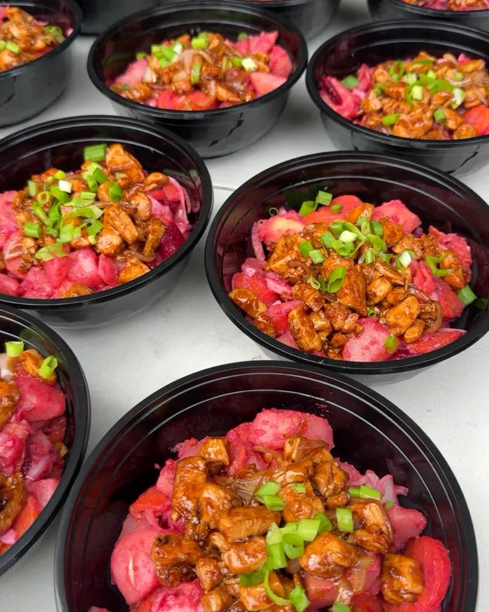
Bien laqué, oignons verts.
La touche maison qu'on repère sur presque chaque photo : une pluie d'oignons verts frais, ajoutée juste avant de servir.
Poulet pané croustillant, cheddar fondant, tomate et salade dans un pain moelleux au sésame : le burger de Snackpasteur, publié dans le menu du 6 novembre.
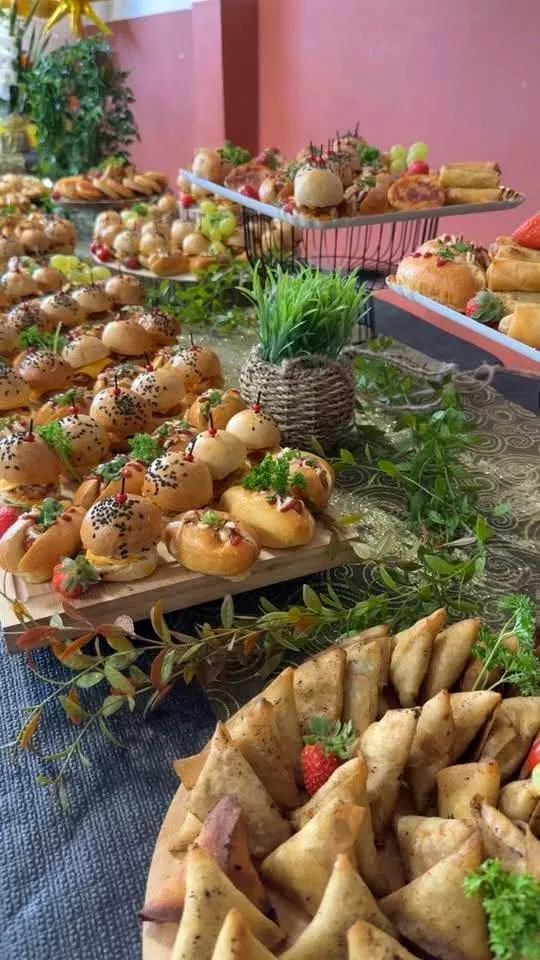
Olivier signe aussi des buffets : mini-burgers au sésame, plateaux de samoussas dorés, feuilletés, fruits frais, le tout dressé avec soin sur bois et verdure.
Super bon repas 😉 Le goût oté 😜Avis publié sur la page Facebook
très bon endroit convivial […] les repas et sandwich de qualitéAvis publié sur la page Facebook
Repas de famille, apéro du bureau, buffet du réveillon : confiez vos tables de fêtes à Olivier et profitez pleinement de vos invités.
Menus et disponibilités des fêtes à voir directement avec Olivier.
E-mail : snackpasteur974@gmail.com
Facebook : Snackpasteur by olivier traiteur
Instagram : @snackpasteur_by_olivier974
Écrire sur Messenger